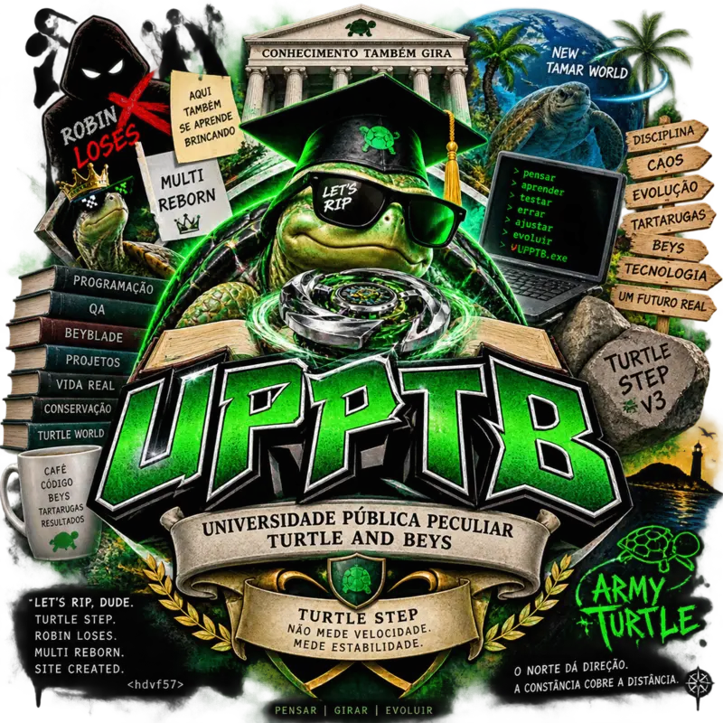

Base forte
O inglês já chegou a um nível avançado no passado. Depois de um longo período sem prática, parte da fluidez permaneceu, mas a gramática ativa perdeu precisão.
English Department · Turtle Campus
Registro da reconstrução do inglês sem fingir que fluidez e gramática são a mesma coisa. Aqui entram prática, modos próprios, erros reais, correções e evolução.

Trajetória
O inglês já chegou a um nível avançado no passado. Depois de um longo período sem prática, parte da fluidez permaneceu, mas a gramática ativa perdeu precisão.
A estratégia foi revisar desde os fundamentos sem tratar revisão como retrocesso. O objetivo é recuperar controle gramatical e não apenas reconhecer estruturas.
Conversação natural continua sendo usada, mas erros de auxiliar, tempo verbal, ordem e escolha de palavras são registrados para correção específica.
Modos oficiais
Correção gramatical rígida. Foco em forma, auxiliares, concordância, tempos verbais e estrutura.
Conversa natural primeiro. As correções ficam consolidadas no final para preservar fluidez e espontaneidade.
Modo avançado para negação, auxiliares, transformação de frases, conditionals e estruturas que exigem precisão técnica.
Modo máximo de rigor. Corrige gramática, estrutura, escolha de palavras e naturalidade sem aliviar erro relevante.
Museu de erros úteis
I am study English.→I am studying English.I study program every day.→I study programming every day.Wath are best...→What are the best...Are my find purpose?→Did I find my purpose?O objetivo desta área não é expor erro antigo como vergonha. É transformar erro recorrente em evidência de evolução.
Metas de desenvolvimento
Reduzir erros em auxiliares, tempos verbais, negação e construção de frases até que a estrutura correta apareça sem esforço excessivo.
Manter conversas mais longas com menos tradução mental, sem sacrificar precisão por velocidade.
Usar exercícios, conversação, produção escrita e certificações como evidência prática de progresso, em vez de confiar apenas em sensação de nível.